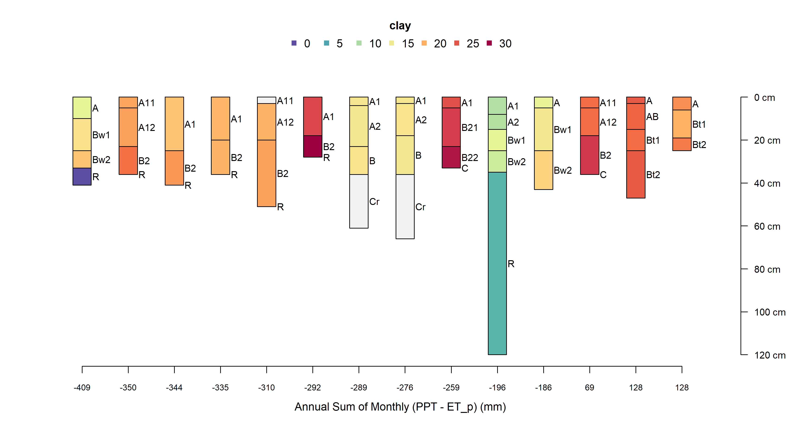
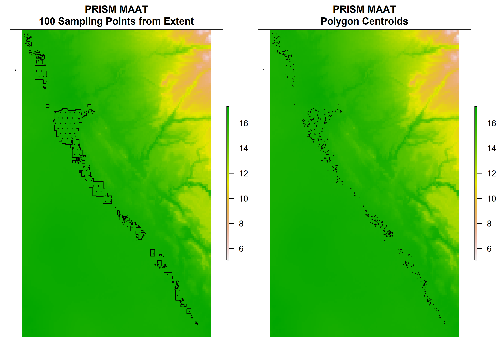
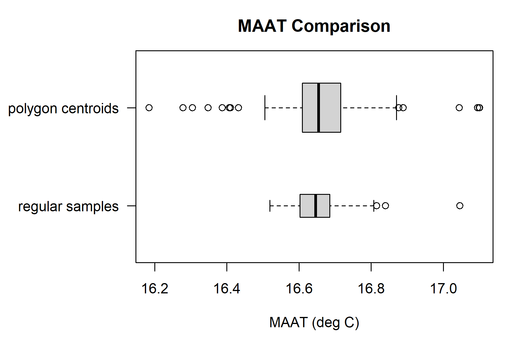
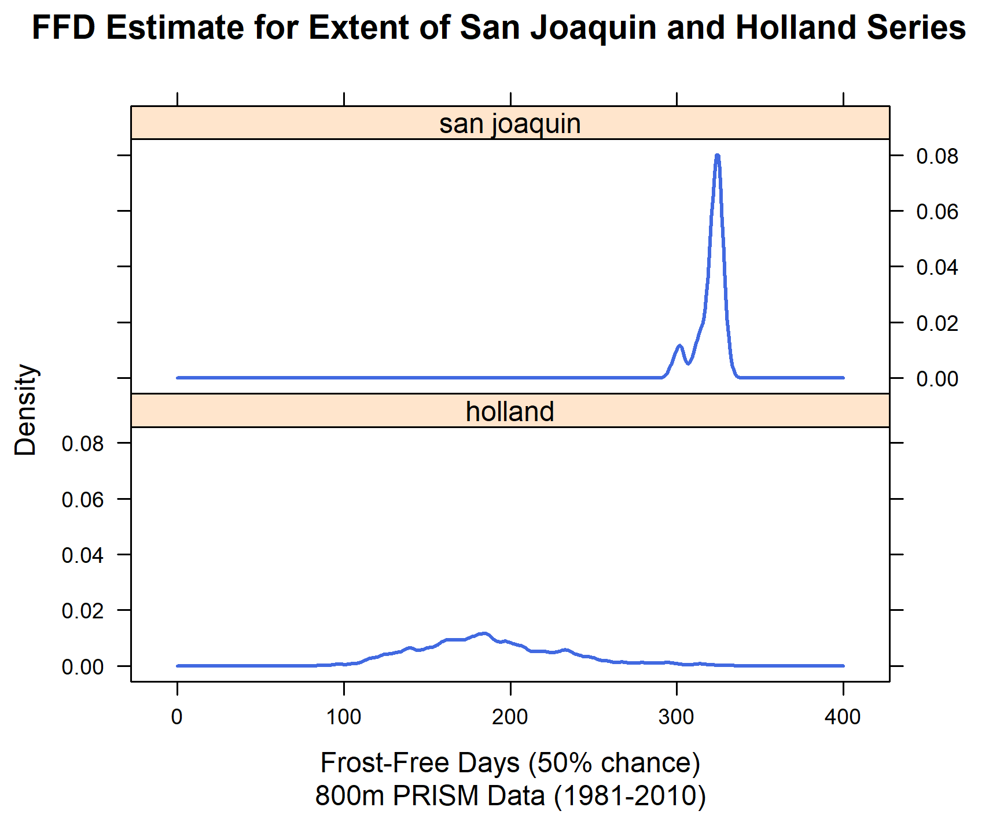

Chapter 4 Spatial Data in R

Most of us are familiar with spatial data types, sources, and the jargon used to describe interaction with these data.
GIS software provides a convenient framework for most of the spatial analysis that we do, however, the combination of statistical routines, advanced graphics, and data access functionality make R an ideal environment for soil science.
For example, with a couple of lines of R code, it is possible to quickly integrate soil morphology (NASIS), lab data (KSSL), map unit polygons (SSURGO), and climate data (PRISM raster files).
This chapter is a very brief demonstration of several possible ways to process spatial data in R.
4.1 Objectives (Spatial Data Structures)
- Gain experience with creating, editing, and exporting spatial data objects in R.
- Learn about tools for making maps with R
- Learn the basics of
sfandsprepresentation of vector data - Learn the basics of
rasterclasses and functions - Learn about some interfaces to NCSS spatial data sources
- Develop a strategy for navigating the many possible spatial data processing methods
There are many packages available for working with spatial data, however we only have time to cover the below libraries.
The next couple of sections will require loading these libraries into the R session.
4.2 Making Maps with R
R has become a powerful tool for visualization and interaction with spatial data. There are many tools available for making maps with R! It is not all geostatistics and coordinate reference system transformations … there are powerful ways to automate your GIS work flow from beginning to end – from creating terrain derivatives from a source DEM, all the way to high-quality, publication-ready maps and interactive HTML/JavaScript widgets.
All of the details of this could fill several books! And it does! A great resource that provides some comparisons of the major tools for this purpose is Making Maps with R.
Making Maps with R shows similar processes using 5 different packages that have different focuses and applications: tmap, ggplot2, mapview, mapdeck and leaflet
4.3 Spatial Data Sources
Conventional spatial data sources:
- raster data sources (elevation, PRISM, etc.): GeoTIFF, ERDAS, BIL, ASCII grid, WMS, …
- vector data sources (points/lines/polygons): Shape File, “file” geodatabase, KML, GeoJSON, GML, WFS, …
Conventional data sources that can be upgraded to spatial data:
- NASIS/LIMS reports: typically site coordinates
- web pages: GeoJSON, WKT, or point coordinates
- Excel file: typically point coordinates
- CSV files: typically point coordinates
R-based interfaces to NCSS data sources via soilDB package:
functions that return tabular data which can be upgraded to spatial data:
fetchKSSL(): KSSL “site” data contain x,y coordinates
fetchNASIS(): NASIS “site” data contain x,y, coordinatesfetchRaCA(): RaCA central pedon x,y coordinatesfunctions that return spatial data:
seriesExtent(): simplified series extent as polygons
fetchHenry(): sensor / weather station locations as pointsSDA_query(): SSURGO data as points, lines, polygons (via SDA)mapunit_geom_by_ll_bbox(): SSURGO data as polygons (via WFS)
NOTE: currently, there is no way to read raster data from ESRI “file” geodatabases. except for this: https://github.com/r-barnes/ArcRasterRescue, which requires ability to compile C code with CMAKE (non-government computer). Vector data (and associated attribute tables) can be accessed.
4.4 Many Packages, Many Spatial Representations
4.4.1 The sf package
Simple Features Access is a set of standards that specify a common storage and access model of geographic features. It is used mostly for two-dimensional geometries such as point, line, polygon, multi-point, multi-line, etc.
This is one of many ways of modeling the geometry of shapes in the real world. This model happens to be widely adopted in the R ecosystem via the sf package, and very convenient for typical data encountered by soil survey operations.
The sf package represents the latest and greatest in spatial data processing within the comfort of an R session. It provides a “main” object class sf to contain geometric data and associated tabular data in a familiar data.frame format. sf methods work on a variety of different levels of abstraction and manipulation of those geometries.
4.4.2 The sp Package
The data structures (“classes”) and functions provided by the sp package have served a foundational role in the handling of spatial data in R for years.
Many of the following examples will reference names such as SpatialPoints, SpatialPointsDataFrame, and SpatialPolygonsDataFrame. These are specialized (S4) classes, implemented by the sp package.
Objects of these classes maintain linkages between all of the components of spatial data. For example, a point, line, or polygon feature will typically be associated with:
- coordinate geometry
- bounding box
- coordinate reference system
- attribute table
4.4.3 Converting sp and sf
sp provides access to the same compiled code libraries (PROJ, GDAL, GEOS) as sf, but mostly via the interfaces in the separate rgdal package.
For certain applications, such as some packages we demonstrate below, there are no sp “interfaces” to the methods – only sf, or vice-versa.
The two different categories of object types are interchangeable, and you may find yourself having to do this for a variety of reasons. You can convert between objects using sf::as_Spatial or sf::st_as_sf.
Check the documentation (?functionname) to figure out what object types different methods need as input; and check an input object’s class with class() or inherits().
4.4.4 Importing / Exporting Vector Data
Import a feature class from a ESRI File Geodatabase or shape file.
If you have a .shp file, you can specify the whole path, including the file extension in the dsn argument, or just the folder. For a Geodatabase, you should specify the feature class using the layer argument. Note that a trailing “/” is omitted from the dsn (data source name) and the “.shp” suffix is omitted from the layer.
4.4.4.1 sf
4.4.4.2 sp / rgdal
Export object x to shapefile.
The st_read() / read_sf() / write_sf() and readOGR(), writeOGR(), readGDAL(), writeGDAL() functions have many arguments, so it is worth spending some time with the associated manual pages.
If you have a .shp file, you can specify the whole path, including the file extension in the dsn argument.
4.4.5 Interactive mapping with mapview and leaflet
These packages make it possible to display interactive maps of sf objects in RStudio, or within an HTML document generated via R Markdown (e.g. this document).
The seriesExtent method in soilDB returns results as an sp object showing generalized extent polygons for a soil series.
# load required packages
library(sf)
library(mapview)
library(leafem)
library(leafpop)
# get series extents from SoilWeb
pentz <- seriesExtent('pentz')
redding <- seriesExtent('redding')
# make a simple map
m <- mapview(st_as_sf(pentz))
# add more data to the map and display
addFeatures(m, st_as_sf(redding), color='black', fillColor='red', weight=1)4.4.6 The raster Package
The raster package package provides most of the commonly used grid processing functionality that one might find in a conventional GIS:
- re-sampling / interpolation
- warping (coordinate system transformations of gridded data)
- cropping, mosaicing, masking
- local and focal functions
- raster algebra
- contouring
- raster/vector conversions
- terrain analysis
- model-based prediction (more on this in later chapters)
Introduction to the raster package vignette
4.4.6.1 Importing / Exporting Rasters
# use an example from the raster package
f <- system.file("external/test.grd", package = "raster")
# create a reference to this raster
r <- raster(f)
# print the details
print(r)## class : RasterLayer
## dimensions : 115, 80, 9200 (nrow, ncol, ncell)
## resolution : 40, 40 (x, y)
## extent : 178400, 181600, 329400, 334000 (xmin, xmax, ymin, ymax)
## crs : +proj=sterea +lat_0=52.1561605555556 +lon_0=5.38763888888889 +k=0.9999079 +x_0=155000 +y_0=463000 +datum=WGS84 +units=m +no_defs
## source : C:/Users/Andrew.G.Brown/Documents/R/win-library/4.0/raster/external/test.grd
## names : test
## values : 138.7071, 1736.058 (min, max)
The disk-based reference can be converted to an in-memory RasterLayer with the readAll() function.
Processing of raster data in memory is always faster than processing on disk, as long as there is sufficient memory.
# check: file is on disk
inMemory(r)
# load into memory, if possible
r <- readAll(r)
# check: file is in memory
inMemory(r)Exporting data requires consideration of the output format, datatype, encoding of NODATA, and other options such as compression.
See the manual pages for writeRaster(), writeFormats(), and dataType() for details. For example, suppose you had a RasterLayer object that you wanted to save to disk as an internally-compressed GeoTIFF:
The writeRaster() function interprets the given (and missing) arguments as:
- ‘.tif’ suffix interpreted as
format=GTiff - creation options of “LZW compression” passed to GeoTiff driver
- default
datatype - default
NAflag
4.4.6.2 Object Properties
RasterLayer objects are similar to sf and sp objects in that they keep track of the linkages between data, coordinate reference system, and optional attribute tables. Getting and setting the contents of RasterLayer objects should be performed using functions such as:
NAvalue(r): get / set the NODATA valuecrs(r)orproj4string(r): get / set the coordinate reference systemres(r): get / set the resolutionextent(r): get / set the extentdataType(r): get / set the data type- … many more, see the
rasterpackage manual
4.4.7 Converting Vector to Raster
4.4.7.1 raster::rasterize()
4.4.7.2 fasterize::fasterize()
4.5 Coordinate Reference Systems
Spatial data aren’t all that useful without an accurate description of the coordinate reference system (CRS). This type of information is typically stored within the “.prj” component of a shapefile, or in the header of a GeoTIFF. Without a CRS it is not possible to perform coordinate transformations (e.g. conversion of geographic coordinates to projected coordinates), spatial overlay (e.g. intersection), or geometric calculations (e.g. distance or area).
The “old” way (PROJ.4) of specifying coordinate reference systems is using character strings containing, for example: +proj or +init arguments. In general, this still “works,” so you may encounter it and need to know about it. But you also may encounter cases where CRS are specified using integer EPSG codes, OGC codes or well-known text (WKT).
Some common examples of coordinate system EPSG codes and their legacy PROJ.4 strings:
- EPSG:
4269/ PROJ.4:+proj=longlat +datum=NAD83- geographic, NAD83 datum - EPSG:
4267/ PROJ.4:+proj=longlat +datum=NAD27- geographic, NAD27 datum - EPSG:
26910/ PROJ.4:+proj=utm +zone=10 +datum=NAD83- projected (UTM zone 10), NAD83 datum - EPSG:
6350/ PROJ.4:+proj=aea +lat_1=29.5 +lat_2=45.5 +lat_0=23.0 +lon_0=-96 +x_0=0 +y_0=0 +datum=NAD83 +units=m +no_defs- Albers Equal Area CONUS (Used for gSSURGO)
While you may encounter PROJ.4 strings, these are no longer considered the preferred method of referencing Coordinate Reference Systems – and, in general, newer methods are “easier.”
Well-known text (WKT) is a human- machine-readable standard format for geometry, so storing the Coordinate Reference System information in a similar format makes sense. This format is returned by the sf::st_crs method.
For example: the WKT representation of EPSG:4326:
## Coordinate Reference System:
## User input: EPSG:4326
## wkt:
## GEOGCRS["WGS 84",
## DATUM["World Geodetic System 1984",
## ELLIPSOID["WGS 84",6378137,298.257223563,
## LENGTHUNIT["metre",1]]],
## PRIMEM["Greenwich",0,
## ANGLEUNIT["degree",0.0174532925199433]],
## CS[ellipsoidal,2],
## AXIS["geodetic latitude (Lat)",north,
## ORDER[1],
## ANGLEUNIT["degree",0.0174532925199433]],
## AXIS["geodetic longitude (Lon)",east,
## ORDER[2],
## ANGLEUNIT["degree",0.0174532925199433]],
## USAGE[
## SCOPE["unknown"],
## AREA["World"],
## BBOX[-90,-180,90,180]],
## ID["EPSG",4326]]This is using the OGC WKT CRS standard. Adoption of this standard caused some significant changes in packages in the R ecosystem.
So you can get familiar, what follows are several examples of doing the same thing: setting the CRS of spatial objects with WGS84 longitude/latitude geographic coordinates. If you have another target coordinate system, it is just a matter of using the correct codes to identify it.
4.5.1 Assigning and Transforming Coordinate Systems
Returning to the example from above, lets assign a CRS to our series extent s using different methods.
The following are equivalent sf versus sp/rgdal syntax.
4.5.1.1 sf
Use st_crs<-/st_crs to set or get CRS of sf objects. Supply the target EPSG code as an integer.
# s is an sp object, we convert it to sf with st_as_sf
s <- st_as_sf(s)
st_crs(s) <- sf::st_crs(4326)Transformation of points, lines, and polygons with sf requires an “origin” CRS be defined in the object that is the argument x, and “target” CRS defined in crs argument as an integer, or output of st_crs().
4.5.1.2 sp / rgdal
You can do the same thing several different ways with sp objects. An equivalent EPSG, OGC and PROJ.4 can be set or get using proj4string<-/proj4string and either a sp CRS object or a PROJ.4 string for Spatial objects.
# s is an sf object (we converted it), convert back to Spatial* object
s <- sf::as_Spatial(s)
# these all create the same internal sp::CRS object
proj4string(s) <- sp::CRS('EPSG:4326') # proj >6; EPSG
proj4string(s) <- sp::CRS('OGC:CRS84') # proj >6; OGC
proj4string(s) <- '+init=epsg:4326' # proj4 style +init string
proj4string(s) <- '+proj=longlat +datum=WGS84' # proj4 style +proj stringHere, we do the same transformations we did above only using sp: spTransform().
4.5.1.3 raster
Use crs<-/crs for raster or Spatial objects, it takes as argument and returns a sp CRS object.
“Transforming” or warping a raster is a different matter than a vector as it requires interpolation of pixels to a defined target resolution and CRS.
The method provided by raster to do this is projectRaster(). It works the same as the above transform methods in that you specify an object to transform, and the target reference system or a template for the object.
Note that the default projectRaster uses bilinear interpolation (method='bilinear'), which is appropriate for continuous variables. You also have the option of using nearest-neighbor (method='ngb') for categorical variables (class maps) where interpolation does not make sense.
If we want to save this transformed raster to file, we can use something like this:
4.6 Operations on Example Data
4.6.1 Load Required Packages
Load required packages into the current R Session.
4.6.2 Download Example Data
This code will create a path for this example data in the workspace2 folder you created. It will download a set of polygons and rasters.
# store path as a variable, in case you want to keep it somewhere else
ch2b.data.path <- 'C:/workspace2/chapter-2b'
# make a place to store chapter 2b example data
dir.create(ch2b.data.path, recursive = TRUE)
# download polygon example data from github
download.file('https://github.com/ncss-tech/stats_for_soil_survey/raw/master/data/chapter_2b-spatial-data/chapter-2b-mu-polygons.zip', file.path(ch2b.data.path, 'chapter-2b-mu-polygons.zip'))
# download raster example data from github
download.file('https://github.com/ncss-tech/stats_for_soil_survey/raw/master/data/chapter_2b-spatial-data/chapter-2b-PRISM.zip', file.path(ch2b.data.path, 'chapter-2b-PRISM.zip'))
# unzip
unzip(file.path(ch2b.data.path, 'chapter-2b-mu-polygons.zip'), exdir = ch2b.data.path, overwrite = TRUE)
unzip(file.path(ch2b.data.path, 'chapter-2b-PRISM.zip'), exdir = ch2b.data.path, overwrite = TRUE)4.6.3 Load the Data
We will be using polygons associated with MLRAs 15 and 18 as part of this demonstration.
Import these data now with readOGR(); recall the somewhat strange syntax. You will need the data and RasterStack object rs we created in the examples above.
# set path to example data
ch2b.data.path <- 'C:/workspace2/chapter-2b'
# load MLRA polygons
mlra <- readOGR(dsn = ch2b.data.path, layer = 'mlra-18-15-AEA')# mean annual air temperature, Deg C
maat <- raster(file.path(ch2b.data.path, 'MAAT.tif'))
# mean annual precipitation, mm
map <- raster(file.path(ch2b.data.path, 'MAP.tif'))
# frost-free days
ffd <- raster(file.path(ch2b.data.path, 'FFD.tif'))
# growing degree days
gdd <- raster(file.path(ch2b.data.path, 'GDD.tif'))
# percent of annual PPT as rain
rain_fraction <- raster(file.path(ch2b.data.path, 'rain_fraction.tif'))
# annual sum of monthly PPT - ET_p
ppt_eff <- raster(file.path(ch2b.data.path, 'effective_preciptitation.tif'))Sometimes it is convenient to “stack” raster data that share a common grid size, extent, and coordinate reference system into a single RasterStack object.
# create a raster stack (multiple rasters aligned)
rs <- stack(maat, map, ffd, gdd, rain_fraction, ppt_eff)
# reset layer names
names(rs) <- c('MAAT', 'MAP', 'FFD', 'GDD', 'rain.fraction', 'eff.PPT')Quick inspection of the data.
## [1] "SpatialPolygonsDataFrame"
## attr(,"package")
## [1] "sp"## [1] "RasterLayer"
## attr(,"package")
## [1] "raster"## [1] "RasterStack"
## attr(,"package")
## [1] "raster"## class : RasterLayer
## dimensions : 762, 616, 469392 (nrow, ncol, ncell)
## resolution : 0.008333333, 0.008333333 (x, y)
## extent : -123.2708, -118.1375, 34.44583, 40.79583 (xmin, xmax, ymin, ymax)
## crs : +proj=longlat +ellps=GRS80 +no_defs
## source : C:/workspace2/chapter-2b/MAAT.tif
## names : MAAT
## values : -4.073542, 18.67642 (min, max)## [1] "+proj=aea +lat_0=23 +lon_0=-96 +lat_1=29.5 +lat_2=45.5 +x_0=0 +y_0=0 +datum=NAD83 +units=m +no_defs"## [1] "+proj=longlat +ellps=GRS80 +no_defs"## [1] "+proj=longlat +ellps=GRS80 +no_defs"Basic plot methods (class-specific functions) for the data. Note that this approach requires that all layers in the “map” are in the same coordinate refrence system (CRS).
# MLRA polygons in native coordinate system
# recall that mlra is a SpatialPolygonsDataFrame
plot(mlra, main = 'MLRA 15 and 18')
box()
# MAAT raster
# recall that maat is a raster object
plot(maat, main = 'PRISM Mean Annual Air Temperature (deg C)')
# plot MAAT raster with MLRA polygons on top
# this requires transforming to CRS of MAAT
mlra.gcs <- spTransform(mlra, CRS(proj4string(maat)))
plot(maat, main = 'PRISM Mean Annual Air Temperature (deg C)')
plot(mlra.gcs, main = 'MLRA 15 and 18', add = TRUE)4.6.4 Spatial Overlay Operations
Spatial data are lot more useful when “combined” (overlay, intersect, spatial query, etc.) to generate something new. For simplicity, we will refer to this kind of operation as an “extraction”. The CRS of the two objects being overlaid must match.
4.6.4.1 Vector data
In sf the functions used to do this are st_intersects() or st_intersection().
In sp objects, you do these operations with the sp::over() function. Access the associated vignette by pasting vignette("over") in the console.
4.6.4.2 Raster Data
The values stored in a RasterLayer or RasterStack object can be extracted using the extract() function.
As long a the “query” feature has a valid CRS defined, the raster::extract() function will automatically perform any required CRS transformation.
4.6.5 Sampling and Extraction
4.6.5.1 Raster Data Sampling
Typically, spatial queries of raster data by polygon features are performed in two ways:
for each polygon, collect all pixels that overlap (
exactextractrapproach)for each polygon, collect a sample of pixels defined by sampling points
The first method ensures that all data are included in the analysis, however, processing can be slow for multiple/detailed rasters, and the results may not fit into memory.
The second method is more efficient (10-100x faster), requires less memory, and can remain statistically sound–as long as a reasonable sampling strategy is applied. Sampling may also help you avoid low-acreage “anomalies” in the raster product. More on sampling methods in the next chapter.
The extract() function can perform several operations in one pass, such as buffering (in projected units) then extracting. See the manual page for an extensive listing of optional arguments and what they do.
Sampling and extraction with raster methods results in a matrix object.
# sampling single RasterLayer
sampleRegular(maat, size = 10)
# sampling RasterStack
sampleRegular(rs, size = 10)Sampling and extract, result is a SpatialPointsDataFrame object.
par(mfcol = c(1, 2), mar = c(1, 1, 3, 1))
# regular sampling + extraction of raster values
x.regular <- sampleRegular(maat, size = 100, sp = TRUE)
plot(maat,
axes = FALSE,
legend = FALSE,
main = 'Regular Sampling')
points(x.regular)
# random sample + extraction of raster values
# note that NULL values are removed
x.random <- sampleRandom(maat,
size = 100,
sp = TRUE,
na.rm = TRUE)
plot(maat,
axes = FALSE,
legend = FALSE,
main = 'Random Sampling with NA Removal')
points(x.random)Note that the mean can be efficiently estimated, even with a relatively small number of samples.
# all values: slow for large grids
mean(values(maat), na.rm = TRUE)
# regular sampling: efficient, central tendency comparable to above
mean(x.regular$MAAT, na.rm = TRUE)
# this value will be pseudorandom
# depends on number of samples, pattern of NA
mean(x.random$MAAT, na.rm = TRUE)Just how much variation can we expect when collecting 100, randomly-located samples over such a large area? This is better covered in chapter 4 (Sampling), but a quick experiment might be fun. Do this 100 times: compute the mean MAAT from 100 randomly-located samples.
4.6.5.2 Extracting Raster Data: KSSL Pedon Locations
Extract PRISM data at the coordinates associated with KSSL pedons that have been correlated to the AUBURN series.
We will use the fetchKSSL() function from the soilDB package to get KSSL data from the most recent snapshot. This example can be easily adapted to pedon data extracted from NASIS using fetchNASIS().
Get some KSSL data and upgrade the “site” data to a SpatialPointsDataFrame.
# result is a SoilProfileCollection object
auburn <- fetchKSSL(series = 'auburn')
# extract site data
s <- site(auburn)
# these are GCS WGS84 coordinates from NASIS
coordinates(s) <- ~ x + y
proj4string(s) <- '+proj=longlat +datum=WGS84'Extract PRISM data (the RasterStack object we made earlier) at the Auburn KSSL locations and summarize.
# return the result as a data.frame object
e <- extract(rs, s, df=TRUE)
# summarize: remove first (ID) column using [, -1] j index
summary(e[, -1])## MAAT MAP FFD GDD rain.fraction eff.PPT
## Min. :15.52 Min. :448.0 Min. :278.0 Min. :2456 Min. :99 Min. :-409.0
## 1st Qu.:16.24 1st Qu.:519.0 1st Qu.:305.5 1st Qu.:2586 1st Qu.:99 1st Qu.:-329.1
## Median :16.45 Median :569.5 Median :316.0 Median :2608 Median :99 Median :-282.3
## Mean :16.33 Mean :633.3 Mean :314.4 Mean :2588 Mean :99 Mean :-208.6
## 3rd Qu.:16.60 3rd Qu.:661.0 3rd Qu.:329.5 3rd Qu.:2623 3rd Qu.:99 3rd Qu.:-188.4
## Max. :16.65 Max. :947.0 Max. :334.0 Max. :2651 Max. :99 Max. : 128.4Join the extracted PRISM data with the original SoilProfileCollection object.
More information on SoilProfileCollection objects here.
# don't convert character data into factors
options(stringsAsFactors = FALSE)
# combine site data with extracted raster values, row-order is identical
res <- cbind(as(s, 'data.frame'), e)
# extract unique IDs and PRISM data
res <- res[, c('pedon_key', 'MAAT', 'MAP', 'FFD', 'GDD', 'rain.fraction', 'eff.PPT')]
# join with original SoilProfileCollection object via pedon_key
site(auburn) <- resThe extracted values are now part of the “auburn” SoilProfileCollection object.
Does there appear to be a relationship between soil morphology and “effective precipitation”? Not really.
# create an ordering of pedons based on the extracted effective PPT
new.order <- order(auburn$eff.PPT)
# setup figure margins, 1x1 row*column layout
par(mar = c(5, 2, 4, 2), mfcol = c(1, 1))
# plot profile sketches
plot(auburn,
name = 'hzn_desgn',
print.id = FALSE,
color = 'clay',
plot.order = new.order,
cex.names = 0.85)
# add an axis with extracted raster values
axis(side = 1,
at = 1:length(auburn),
labels = round(auburn$eff.PPT[new.order]),
cex.axis = 0.75)
mtext('Annual Sum of Monthly (PPT - ET_p) (mm)',
side = 1,
line = 2.5)
Note that negative values are associated with a net deficit in monthly precipitation vs. estimated ET.
4.6.5.3 Raster Summary By Polygon: Series Extent
The seriesExtent() function from the soilDB package provides a simple interface to Series Extent Explorer data files.
Note that these series extents have been generalized for rapid display at regional to continental scales. A more precise representation of “series extent” can be generated from SSURGO polygons and queried from SDA.
Get an approximate extent for the Amador soil series from SEE. See the manual page for seriesExtent for additional options and related functions.
## [1] "SpatialPolygonsDataFrame"
## attr(,"package")
## [1] "sp"Generate 100 sampling points within the extent, using a hexagonal grid. These will be used to extract raster values from our RasterStack of PRISM data.
For comparison, extract a single point from each SSURGO map unit delineation that contains Amador as a major component. This will require a query to SDA for the set of matching map unit keys (mukey), followed by a second request to SDA for the geometry.
The SDA_query function is used to send arbitrary queries written in SQL to SDA, the results may be a data.frame or list, depending on the complexity of the query. The fetchSDA_spatial function returns map unit geometry as either polygons, polygon envelopes, or a single point per polygon and selected by mukey or nationalmusym.
# result is a data.frame
mukeys <- SDA_query("SELECT DISTINCT mukey FROM component
WHERE compname = 'Amador' AND majcompflag = 'Yes';")
# result is a SpatialPointsDataFrame
amador.pts <- fetchSDA_spatial(mukeys$mukey,
by.col = 'mukey',
method = 'point',
chunk.size = 2)Graphically check both methods:
# adjust margins and setup plot device for two columns
par(mar = c(1, 1, 3, 1), mfcol = c(1, 2))
# first figure
plot(maat,
ext = extent(s),
main = 'PRISM MAAT\n100 Sampling Points from Extent',
axes = FALSE)
plot(amador, add = TRUE)
points(s, cex = 0.25)
plot(maat,
ext = extent(s),
main = 'PRISM MAAT\nPolygon Centroids',
axes = FALSE)
points(amador.pts, cex = 0.25)
Extract PRISM data (the RasterStack object we made earlier) at the sampling locations (100 regularly-spaced and from MU polygon centroids) and summarize. Note that CRS transformations are automatic (when possible).
# return the result as a data.frame object
e <- extract(rs, s, df = TRUE)
e.pts <- extract(rs, amador.pts, df = TRUE)
# check out the extracted data
summary(e[,-1])## MAAT MAP FFD GDD rain.fraction eff.PPT
## Min. :16.52 Min. :331.0 Min. :312.0 Min. :2590 Min. : 99.00 Min. :-557.9
## 1st Qu.:16.60 1st Qu.:444.0 1st Qu.:323.2 1st Qu.:2624 1st Qu.: 99.00 1st Qu.:-415.5
## Median :16.65 Median :488.0 Median :330.0 Median :2642 Median : 99.00 Median :-353.3
## Mean :16.65 Mean :481.9 Mean :329.0 Mean :2643 Mean : 99.01 Mean :-366.8
## 3rd Qu.:16.68 3rd Qu.:539.0 3rd Qu.:335.0 3rd Qu.:2665 3rd Qu.: 99.00 3rd Qu.:-293.3
## Max. :17.05 Max. :599.0 Max. :341.0 Max. :2758 Max. :100.00 Max. :-226.0| MAAT | MAP | FFD | GDD | rain.fraction | eff.PPT | |
|---|---|---|---|---|---|---|
| MAAT | 1.00 | -0.47 | -0.12 | 0.74 | 0.03 | -0.47 |
| MAP | -0.47 | 1.00 | 0.68 | -0.87 | -0.01 | 0.99 |
| FFD | -0.12 | 0.68 | 1.00 | -0.63 | -0.06 | 0.71 |
| GDD | 0.74 | -0.87 | -0.63 | 1.00 | 0.11 | -0.87 |
| rain.fraction | 0.03 | -0.01 | -0.06 | 0.11 | 1.00 | -0.02 |
| eff.PPT | -0.47 | 0.99 | 0.71 | -0.87 | -0.02 | 1.00 |
Quickly compare the two sets of samples. More on this in the Sampling module.
# compile results into a list
maat.comparison <- list('regular samples' = e$MAAT,
'polygon centroids' = e.pts$MAAT)
# number of samples per method
lapply(maat.comparison, length)## $`regular samples`
## [1] 86
##
## $`polygon centroids`
## [1] 395## $`regular samples`
## Min. 1st Qu. Median Mean 3rd Qu. Max.
## 16.52 16.60 16.65 16.65 16.68 17.05
##
## $`polygon centroids`
## Min. 1st Qu. Median Mean 3rd Qu. Max.
## 16.18 16.61 16.65 16.66 16.72 17.10# box-whisker plot
par(mar = c(4.5, 8, 3, 1), mfcol = c(1, 1))
boxplot(
maat.comparison,
horizontal = TRUE,
las = 1,
xlab = 'MAAT (deg C)',
varwidth = TRUE,
boxwex = 0.5,
main = 'MAAT Comparison'
)
Basic climate summaries from a standardized source (e.g. PRISM) might be a useful addition to an OSD.
Think about how you could adapt this example to compare climate summaries derived from NASIS pedons to similar summaries derived from map unit polygons and generalized soil series extents.
4.6.5.4 Raster Summary By Polygon: MLRA
The following example is a simplified version of what is available in the soilReports package, reports on the ncss-tech GitHub repository, or in the TEUI suite of map unit summary tools. The Computing GIS Summaries from Map Unit Polygons tutorial is an expanded version of this example.
Example output from the soilReports package:
Efficient summary of large raster data sources can be accomplished using:
- internally-compressed raster data sources, stored on a local disk, can be in any coordinate system
- polygons stored in an equal-area or UTM coordinate system, with CRS units of meters
- fixed-density sampling of polygons
- estimation of quantiles from collected raster samples
Back to our example data. The first step is to check the MLRA polygons (mlra); how many features per MLRA symbol? Note that some MLRA have more than one polygon.
Convert polygon area from square meters to acres and summarize. Note that this will only make sense when using a projected CRS with units of meters (equal area)!
poly.area <- round(sapply(mlra@polygons, slot, 'area') * 0.000247105)
summary(poly.area)
sum(poly.area)Sample each polygon at a constant sampling density of 0.001 samples per acre (1 sample for every 1,000 ac.). At this sampling density we should expect approximately 16,700 samples–more than enough for our simple example.
library(sharpshootR)
# the next function requires a polygon ID:
# each polygon gets a unique number 1--number of polygons
mlra$pID <- 1:nrow(mlra)
s <- constantDensitySampling(mlra, n.pts.per.ac = 0.001)Extract MLRA symbol at sample points using the over() function. The result will be a data.frame object with all attributes from our MLRA polygons that intersect sampling points s.
# spatial overlay: sampling points and MLRA polygons
res <- over(spTransform(s, proj4string(mlra)), mlra)
# row / feature order is preserved, so we can directly copy
s$mlra <- res$MLRARSYM
# tabulate number of samples per MLRA
table(s$mlra)##
## 18
## 76Extract values from the RasterStack of PRISM data as a data.frame.
# raster stack extraction at sampling points
e <- extract(rs, s, df=TRUE)
# convert sampling points from SpatialPointsDataFrame to data.frame
s.df <- as(s, 'data.frame')
# join columns from extracted values and sampling points
s.df <- cbind(s.df, e)
# check results
head(s.df)## mlra x y ID MAAT MAP FFD GDD rain.fraction eff.PPT
## 1 18 -120.1130 37.22703 1 17.04607 344 312 2758 99 -557.8790
## 2 <NA> -120.2316 37.34116 2 16.83997 335 313 2712 99 -546.8068
## 3 18 -120.2712 37.36398 3 16.74595 331 314 2698 99 -544.6131
## 4 18 -120.2975 37.40963 4 16.71504 341 315 2682 99 -530.5748
## 5 18 -120.2843 37.43246 5 16.68312 360 315 2677 99 -509.5594
## 6 18 -120.2975 37.45528 6 16.81515 383 324 2695 99 -490.1275Summarizing multivariate data by group (MLRA) is usually much simpler after reshaping data from “wide” to “long” format.
library(reshape2)
# reshape from wide to long format
m <- melt(s.df,
id.vars = c('mlra'),
measure.vars = c('MAAT', 'MAP', 'FFD', 'GDD', 'rain.fraction', 'eff.PPT'))
# check "wide" format
head(m)## mlra variable value
## 1 18 MAAT 17.04607
## 2 <NA> MAAT 16.83997
## 3 18 MAAT 16.74595
## 4 18 MAAT 16.71504
## 5 18 MAAT 16.68312
## 6 18 MAAT 16.81515A simple tabular summary of means by MLRA and PRISM variable using tapply().
## MAAT MAP FFD GDD rain.fraction eff.PPT
## 18 16.65127 484.9868 329.3289 2642.579 99.01316 -362.72894.6.5.5 Faster with exactextractr
This example shows how to determine the distribution of Frost-Free Days across a soil series extent.
The data are extracted from the raster data source very rapidly using the exactextractr package.
library(sf)
library(soilDB)
library(raster)
library(lattice)
library(exactextractr)
# 5-10 seconds to download Series Extent Explorer data
series <- c('holland','san joaquin')
# make SpatialPolygonsDataFrame
s <- do.call('rbind', lapply(series, seriesExtent))
# load pointer to PRISM data
r <- raster('C:/workspace2/chapter-2b/FFD.tif')
# transform extent to CRS of raster with sf
s <- st_transform(st_as_sf(s), crs = st_crs(r))
# inspect
s
# use `st_union(s)` to create a MULTI- POINT/LINE/POLYGON from single
# use `sf::st_cast(s, 'POLYGON')` to create other types
# <0.4 seconds for sampling, including coverage fractions!
system.time({ ex <- exactextractr::exact_extract(r, s) })
# ex is a list(), with data.frame [value, coverage_fraction]
# for each polygon in s (we have one MULTIPOLYGON per series)
# combine all list elements `ex` into single data.frame `ex.all`
# - use do.call('rbind', ...) to stack data.frames row-wise
# - an anonymous function that iterates along length of `ex`
# - adding the series name to as a new variable, calculated using `i`
ex.all <- do.call('rbind', lapply(seq_along(ex), function(i) {
cbind(data.frame(group = series[i]), ex[[i]])
}))
# simple summary
densityplot(~ value | group, data = ex.all,
plot.points=FALSE, bw = 2, lwd = 2,
col = c('RoyalBlue'), layout = c(1, 2),
ylab = 'Density', from = 0, to = 400,
xlab = 'Frost-Free Days (50% chance)\n800m PRISM Data (1981-2010)',
main = 'FFD Estimate for Extent of San Joaquin and Holland Series')
4.7 Additional Reading (Spatial)
Ahmed, Zia. 2020. Geospatial Data Science with R.
Gimond, M., 2019. Intro to GIS and Spatial Analysis https://mgimond.github.io/Spatial/
Hijmans, R.J. 2019. Spatial Data Science with R. https://rspatial.org/
Lovelace, R., J. Nowosad, and J. Muenchow, 2019. Geocomputation with R. CRC Press. https://bookdown.org/robinlovelace/geocompr/
Pebesma, E., and R.S. Bivand. 2005. Classes and methods for spatial data: The sp package. https://cran.r-project.org/web/packages/sp/vignettes/intro_sp.pdf.
Pebesma, E. and R. Bivand, 2019. Spatial Data Science. https://keen-swartz-3146c4.netlify.com/